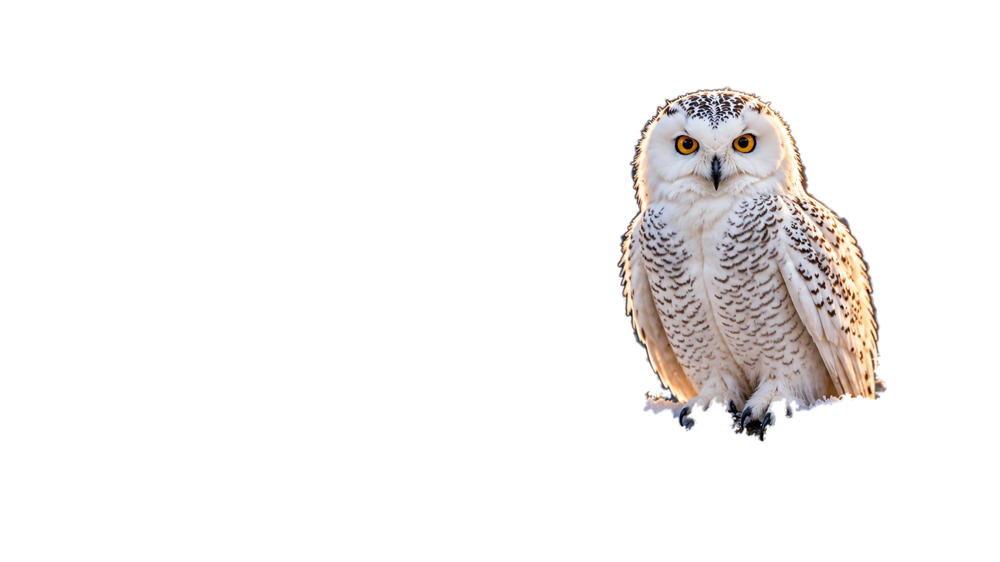
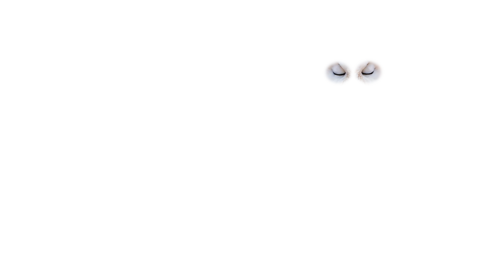

HI, I'M
Mariia Kit
I solve problems, test ideas, and build technology with purpose.
QA · BUSINESS ANALYSIS · SOFTWARE DEVELOPMENT · AI
WHAT I'M BUILDING
I learn best by solving something real.
Explore the projects, skills, and ideas that shape my work.